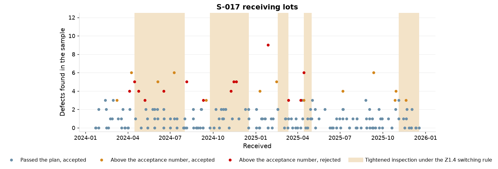
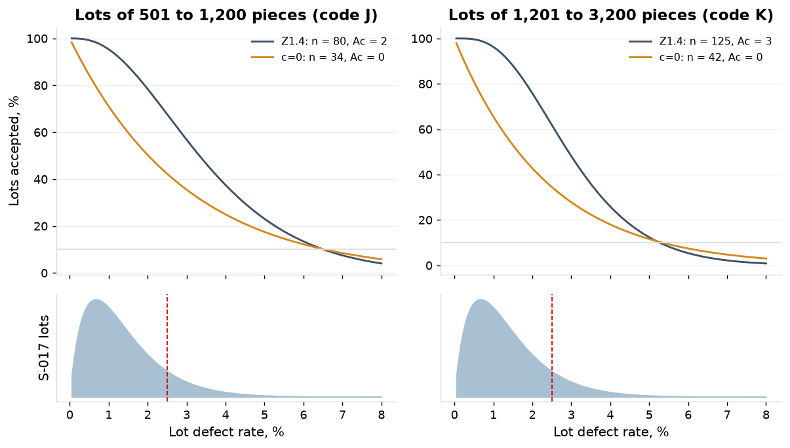
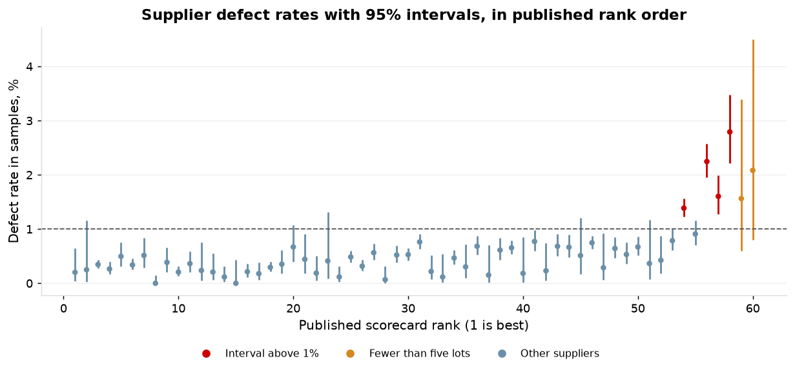
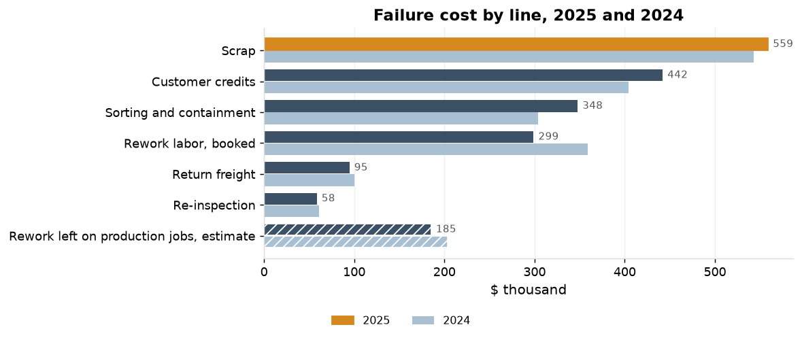
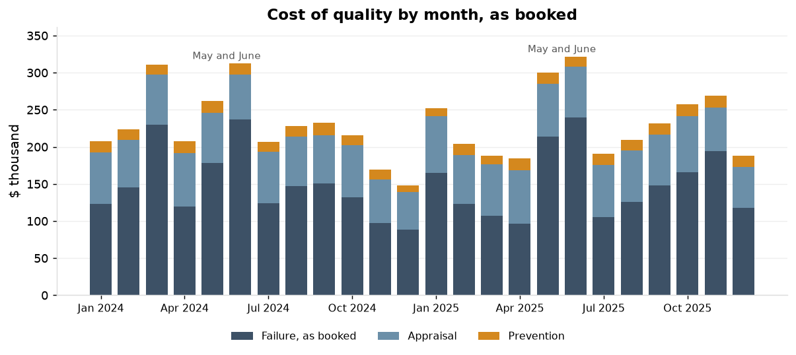

1. The plan as operated
Normal inspection is recorded on every one of S-017's 194 lots; the Z1.4 switching rule would have put 76 of them on tightened inspection, from 15 April 2024. Across all 5,031 receiving lots the sample was below the table value on 12.4%, and 75 of the 198 lots with defects above the acceptance number were dispositioned accept (1.5% of all lots), with no deviation recorded.
| Inspector | Lots | Sample below the table value | Share | Defects above the acceptance number | of them accepted | Share of all lots |
|---|---|---|---|---|---|---|
| E-0155 | 2,545 | 322 | 12.7% | 94 | 42 | 1.65% |
| E-0156 | 2,486 | 303 | 12.2% | 104 | 33 | 1.33% |
| Both | 5,031 | 625 | 12.4% | 198 | 75 | 1.49% |

2. The two plans at the shop's lot sizes
The c=0 plan gives the same LTPD as the Z1.4 plan (6.6% against 6.5% on lots of 501 to 1,200, 5.3% against 5.3% on 1,201 to 3,200) at 38% of the sample pieces. It accepts 95% of lots only at 0.15% defective or better, where the Z1.4 plan does so at 1.03%. On S-017 the Z1.4 table takes 9,695 sample pieces a year, 205 hours; the c=0 plan 3,642 pieces, 77 hours.
| Plan | Lots; lot sizes | n | Ac | Accepted at 0.5% | 1% | 2.5% | 4% | 6.5% | AOQL | LTPD | Quality accepted 95% of the time |
|---|---|---|---|---|---|---|---|---|---|---|---|
| Z1.4 code J | 108; 608 to 1198 | 80 | 2 | 99.2% | 95.3% | 67.7% | 37.5% | 10.1% | 1.55% | 6.5% | 1.03% |
| c=0, lots of code J | 108; 608 to 1198 | 34 | 0 | 84.3% | 71.1% | 42.3% | 25.0% | 10.2% | 1.02% | 6.6% | 0.15% |
| Z1.4 code K | 86; 1205 to 1716 | 125 | 3 | 99.6% | 96.3% | 61.9% | 25.9% | 3.5% | 1.42% | 5.3% | 1.10% |
| c=0, lots of code K | 86; 1205 to 1716 | 42 | 0 | 81.0% | 65.6% | 34.5% | 18.0% | 5.9% | 0.84% | 5.3% | 0.12% |

3. S-017's lot quality
S-017's lots average 1.37% defective, above the AQL of 1.0%, and 12.4% of its lots are above 2.5%. The samples hold 254 defects in 18,317 pieces; the lot defect rate runs from 0.23% at the 5th percentile to 3.28% at the 95th.
4. The two plans on S-017's history
On S-017's lot history the current plan passes 47% of lots above 2.5% defective and the c=0 plan 29%. The current plan rejects 26 of 194 lots and the c=0 plan 72, because S-017 runs above the AQL.
| Z1.4 as used | c=0 plan | |
|---|---|---|
| Lots above 2.5% defective, expected of 194 | 24.1 | 24.1 |
| Lots passing the plan: expected; from the record | 167.5; 167 | 122.5; 123.0 |
| Lots above 2.5% that pass: expected; from the record | 11.4; 11.6 | 7.1; 7.3 |
| Share of lots above 2.5% that pass | 47% | 29% |
| Lots rejected, expected | 26.5 | 71.5 |
| Defective pieces in lots that pass, expected | 2,235 | 1,489 |
| Lots dispositioned accept; above 2.5% among them, from the record | 180 (13 above the acceptance number); 17.3 |
5. The escapes
9 complaints for plating defects trace to accepted S-017 lots, 70 pieces reported. By their own samples 1.8 of those lots were above 2.5% defective; their samples held 2.0 defects on average against 1.0 on the other accepted lots. They cost $117,479 in credits, $19,686 in containment and $24,061 in return freight.
6. The scorecard restated
4 of 60 suppliers have a defect rate whose 95% interval lies above 1%: S-017 (plating, 1.39%), S-030 (heat treat, 2.25%), S-041 (passivation, 1.60%), S-053 (castings, 2.79%). 47 lie entirely below 1%. Two of the five worst on the published scorecard, S-059 (4 lots) and S-056 (3 lots), are ranked on fewer than five lots. Ranked by defect rate, S-011 moves from 40 to 9 and S-021 from 5 to 35.
| Supplier | Commodity | Lots | Published rank | Lot acceptance (95%) | Defect rate (95%) | On time (95%) | Restated rank |
|---|---|---|---|---|---|---|---|
| S-017 | plating | 194 | 54 | 92.8% (88.5 to 95.8) | 1.39% (1.22 to 1.56) | 91% (86 to 94) | 55 |
| S-030 | heat treat | 97 | 56 | 85.6% (77.6 to 91.5) | 2.25% (1.95 to 2.58) | 90% (82 to 95) | 57 |
| S-041 | passivation | 69 | 57 | 84.1% (74.1 to 91.2) | 1.60% (1.27 to 1.99) | 97% (91 to 99) | 56 |
| S-053 | castings | 45 | 58 | 82.2% (69.2 to 91.2) | 2.79% (2.22 to 3.47) | 100% (95 to 100) | 58 |
| S-059 | other | 4 | 59 | 75.0% (28.4 to 97.2) | 1.56% (0.60 to 3.39) | 100% (56 to 100) | fewer than five lots |
| S-056 | castings | 3 | 60 | 66.7% (17.7 to 96.1) | 2.08% (0.80 to 4.51) | 67% (18 to 96) | fewer than five lots |
| S-011 | bar | 45 | 40 | 97.8% (90.1 to 99.8) | 0.18% (0.02 to 0.85) | 87% (75 to 94) | 9 |
| S-021 | plating | 44 | 5 | 100.0% (94.5 to 100.0) | 0.50% (0.31 to 0.75) | 98% (90 to 100) | 35 |
| S-050 | anodizing | 35 | 7 | 100.0% (93.1 to 100.0) | 0.51% (0.29 to 0.84) | 97% (87 to 100) | 37 |
| S-014 | bar | 52 | 37 | 98.1% (91.4 to 99.8) | 0.15% (0.02 to 0.70) | 98% (91 to 100) | 7 |
| S-013 | bar | 70 | 33 | 98.6% (93.5 to 99.8) | 0.12% (0.01 to 0.54) | 91% (83 to 96) | 4 |

7. Totals and shares
Sections 7 to 13 cover the cost of quality by category, its reconciliation to the source tables, and the cost attributable to the findings.
Cost of quality in 2025 is $2,794,501 as booked, 7.1% of revenue of $39,378,537. With the rework left on production jobs estimated from hours over standard it is $2,979,742, 7.6%. In 2024 the figures were 6.6% as booked and 7.1% with the estimate. Failure is 64.4% of the booked total, appraisal 29.5% and prevention 6.1%.
| 2025 | 2024 | 24 months | |
|---|---|---|---|
| Revenue (quantity shipped at unit price) | $39,378,537 | $41,420,159 | $80,798,696 |
| Scrap report (scrap transactions) | $558,887 | $543,011 | $1,101,898 |
| Failure, as booked | $1,800,447 | $1,771,627 | $3,572,075 |
| Appraisal | $823,154 | $784,640 | $1,607,793 |
| Prevention | $170,900 | $168,083 | $338,983 |
| Total, as booked | $2,794,501 | $2,724,350 | $5,518,851 |
| Total over revenue, as booked | 7.10% | 6.58% | 6.83% |
| Shares of the booked total: failure; appraisal; prevention | 64.4%; 29.5%; 6.1% | 65.0%; 28.8%; 6.2% | 64.7%; 29.1%; 6.1% |
| Failure : appraisal : prevention, as booked | 10.5 : 4.8 : 1 | 10.5 : 4.7 : 1 | 10.5 : 4.7 : 1 |
| Rework left on production jobs, estimate | $185,242 | $203,522 | $388,764 |
| Failure, with the estimate | $1,985,689 | $1,975,150 | $3,960,839 |
| Total, with the estimate | $2,979,742 | $2,927,872 | $5,907,615 |
| Total over revenue, with the estimate | 7.57% | 7.07% | 7.31% |
| Shares with the estimate: failure; appraisal; prevention | 66.6%; 27.6%; 5.7% | 67.5%; 26.8%; 5.7% | 67.0%; 27.2%; 5.7% |
| Failure : appraisal : prevention, with the estimate | 11.6 : 4.8 : 1 | 11.8 : 4.7 : 1 | 11.7 : 4.7 : 1 |
8. Reconciliation to the source tables
Every failure line of 2025 traces to its source record with no difference: $1,800,447 of $1,800,447. Of appraisal, $74,855 of $823,154 traces (CMM time to the CMM reports, laboratory calibration to the calibration events); inspection labor and the technician's calibration time are booked from timesheets that are not in the exports. No prevention line traces: training, SPC software and supplier audit travel are booked from invoices. In all, $1,875,303 of $2,794,501 as booked is traced, 67.1%. The estimate of rework left on production jobs: the 33 NCRs of 2025 with a rework disposition and no hours on the rework code sit on 32 production lots that ran 3,859 hours over standard, valued at the machinist rate.
| Line | Category | Cost lines | Amount | Source | Source records | Source amount | Difference |
|---|---|---|---|---|---|---|---|
| Scrap | failure | 382 | $558,886.64 | scrap transactions | 2,289 | $558,886.64 | $0.00 |
| Rework labor | failure | 65 | $298,848.00 | NCR rework hours at the machinist rate | 65 | $298,848.00 | $0.00 |
| Re-inspection | failure | 230 | $58,424.10 | NCR re-inspection hours at the inspector rate | 230 | $58,424.10 | $0.00 |
| Sorting and containment | failure | 114 | $347,693.56 | NCR sorting hours; complaint containment and sorting hours | 114 | $347,693.56 | $0.00 |
| Customer credit | failure | 37 | $441,958.68 | complaint credits | 37 | $441,958.68 | $0.00 |
| Return freight | failure | 37 | $94,636.34 | complaint return freight | 37 | $94,636.34 | $0.00 |
| CMM time | appraisal | 36 | $57,355.20 | CMM reports (hours per report and rate per hour as booked) | 11,949 | $57,355.20 | $0.00 |
| Calibration, laboratory | appraisal | 38 | $17,500.00 | laboratory calibration events (count; the record carries no cost) | 38 | $17,500.00 | $0.00 |
| Calibration, technician time | appraisal | 12 | $85,664.17 | timesheets | |||
| Inspection labor | appraisal | 48 | $662,634.21 | timesheets | |||
| Training | prevention | 24 | $85,943.25 | invoices | |||
| SPC software | prevention | 12 | $42,000.00 | invoices | |||
| Supplier audit travel | prevention | 10 | $42,956.67 | invoices |
9. Rework as booked and the estimate
Accounting books rework from the rework labor code: $298,848 on 65 NCRs in 2025. 33 of the 98 rework NCRs carry no hours on that code; the estimate for them is $185,242, which raises rework from $298,848 to $484,090. In 2024, 46 of 126 carried none (46 lots) and the estimate is $203,522.
| Year | Rework NCRs | With hours on the rework code | Hours booked | Amount booked | Without hours on the code | Their lots | Hours over standard on their lots | Estimate at the machinist rate |
|---|---|---|---|---|---|---|---|---|
| 2025 | 98 | 65 | 6,226 | $298,848 | 33 | 32 | 3,859 | $185,242 |
| 2024 | 126 | 80 | 7,809 | $359,209 | 46 | 46 | 4,424 | $203,522 |
10. Failure cost against the scrap report
The scrap report understates failure cost: failure cost in 2025 is 3.22 times the scrap report as booked and 3.55 times with the estimate (3.26 and 3.64 in 2024). The report shows $558,887; customer credits, sorting and containment, rework labor, return freight and re-inspection add $1,241,561 as booked.

11. Monthly trend
Failure cost as booked averages $150,037 a month in 2025 against $147,636 in 2024; appraisal and prevention are level. May and June are the highest pair of months in both years: $453,065 in 2025 and $414,623 in 2024. The peaks are in customer credits ($189,422 and $117,678) and in sorting and containment ($94,693 and $93,762), not in scrap ($58,824 and $94,689); F-14 scrap in May and June 2025 was $1,050.

12. Cost attributable to the findings on the milled length, F-14 scrap and S-017 escapes
The findings of Measurement systems and process capability, Root cause and designed experiment and Sections 1 to 6 account for $128,076 of $1,985,689 of failure cost in 2025 (with the estimate), 6.4%. The remaining failure cost sits in lines the studies did not address: customer credits outside S-017 ($368,881), scrap outside F-14 ($521,226) and sorting and containment outside the two ($340,293).
The milled length C-11909-01 (the measurement report): $4,469 in 2025 from NCRs citing the length, which understates it, since 1 of its 2 rework NCRs carries no booked hours and the other NCR lines on part P-11909-A ($8,533 in 2025, citing C-11909-03 or no characteristic) are not added. F-14 scrap (the root cause report): $37,661 in 2025; $4,196 a month on the 76 lots before the K20 insert and $766 a month on the 36 lots since. S-017 escapes (Sections 1 to 6): 3 complaints in 2025 with $73,077 in credits, $7,401 in containment and $5,468 in return freight.
| Failure line | 2025 | Study finding on the line | 2025 under the findings | 2025 remaining | 2024 | 2024 under the findings |
|---|---|---|---|---|---|---|
| Scrap | $558,887 | F-14 scrap; the length | $37,661 | $521,226 | $543,011 | $38,693 |
| Customer credits | $441,959 | S-017 escapes | $73,077 | $368,881 | $404,031 | $44,402 |
| Sorting and containment | $347,694 | S-017 escapes; the length | $7,401 | $340,293 | $303,891 | $12,285 |
| Rework labor, booked | $298,848 | the length | $3,850 | $294,998 | $359,209 | $2,332 |
| Return freight | $94,636 | S-017 escapes | $5,468 | $89,168 | $100,198 | $18,593 |
| Re-inspection | $58,424 | the length | $619 | $57,805 | $61,287 | $312 |
| Rework left on production jobs, estimate | $185,242 | $0 | $185,242 | $203,522 | $0 | |
| Failure, with the estimate | $1,985,689 | $128,076 | $1,857,613 | $1,975,150 | $116,616 |
Receiving inspection under the Z1.4 switching rules (Sections 1 to 6) is a cost avoided in appraisal, not a failure cost: at 1.27 minutes per sampled piece, 2,298 hours and $96,519 over the 24 months.
| Receiving inspection, 24 months | Sample pieces | Hours | Cost |
|---|---|---|---|
| Z1.4 table on every lot | 372,074 | 7,863 | $330,195 |
| Z1.4 with the switching rules applied | 263,313 | 5,564 | $233,676 |
| Difference | 108,761 | 2,298 | $96,519 |
13. Prevention
Prevention is the smallest category: $170,900 in 2025, 6.1% of the booked total and 5.7% with the estimate, down from 6.2% and 5.7% in 2024. Failure to appraisal to prevention is 10.5 : 4.8 : 1 as booked and 11.6 : 4.8 : 1 with the estimate (10.5 : 4.7 : 1 and 11.8 : 4.7 : 1 in 2024).
Recommendation
- Apply the Z1.4 switching rules as written: reduced inspection for suppliers that qualify and tightened for those that do not. On the record, 2,530 of the 4,309 lots of the 47 suppliers below 1% would have been on reduced inspection (47 suppliers qualify), saving 108,761 sample pieces and 2,298 hours in 24 months; 191 of the 405 lots of the four suppliers above 1% would have been on tightened, with 111 lots not accepted where 83 failed the plan on normal inspection.
- The c=0 plan at AQL 1.0 is the option where a customer requires it; on this record it rejects 72 of 194 S-017 lots and about 534 of the 4,309 lots of the suppliers below 1%.
- For S-017 and the three other suppliers above 1% the plan is not the lever: a supplier corrective action with the lot history as the evidence, and source inspection or 100% sort at the supplier's cost until the interval falls below 1%.
- Record the inspection level on every receiving lot.
- Publish the scorecard with intervals and a minimum of five lots for a rank.
- Stop accepting lots above the acceptance number without a recorded deviation.
- Book rework and sorting hours against the NCR, not the production job, so that failure cost is captured without an estimate.
- Carry the cost of quality by category on the monthly quality review, on the booked basis, with the scrap report shown as a component and not as the total.
- Give re-inspection its own labor code; it is now identified only by the NCR reference on inspection labor lines.
Target: Failure cost reported on a booked basis with no estimate line required, reviewed monthly.
| Action | Owner | When |
|---|---|---|
| Rework and sorting hours booked against the NCR, not the production job | Production manager and controller | March 2026 |
| Cost of quality by category on the monthly quality review, booked basis, with the scrap report as a component | Quality manager | from the February 2026 review |
| A labor code for re-inspection, apart from inspection labor | Controller | March 2026 |
Follow-up: The count of rework NCRs without hours and the four categories as booked, each month on the quality review. The cost lines traced again to their source tables at the end of 2026.
Method and data
Acceptance sampling and supplier quality
Plans: ANSI/ASQ Z1.4 single sampling, normal inspection, general level II, AQL 1.0; the zero-acceptance plan from the published table at the same AQL, which carries no switching rule. OC curves are binomial where the lot is above ten times the sample and hypergeometric otherwise, lot by lot. Lot quality: a beta distribution fitted by maximum likelihood to the defects found in each sample (a 1.92, b 137.8). Lots above 2.5% from the record: each lot that passed, weighted by the chance that it is above 2.5% given its own sample and the fitted distribution; a construction, since no lot's rate is observed. The c=0 plan on the record: the chance that its sample, drawn from the sample taken, holds no defect. Switching: tightened after 2 of 5 consecutive lots not accepted, normal again after 5 consecutive accepted, tightened acceptance numbers on the same samples; reduced from a switching score of 30 (plus 3 for a lot that passes one AQL step tighter where the acceptance number is 2 or more, plus 2 for an accepted lot otherwise, reset on any other result), production taken as steady, back to normal on a lot above the reduced acceptance number; the reduced sample is drawn from the sample taken and the result averaged over 400 seeded replications. Hours: the receiving inspectors' booked hours (7,472 in 24 months) over the pieces they sampled on all 5,031 lots (353,592) give 1.27 minutes per sampled piece. Rate intervals are Jeffreys intervals. Restated rank: by defect rate among suppliers with five lots or more.
Cost of quality
Cost lines: 2,147 lines of the accounting ledger over the 24 months, grouped as failure, appraisal and prevention; re-inspection is the inspection labor booked against NCRs and is counted as failure. Reconciliation: each line against the record it derives from, by count and amount; scrap against the scrap transactions, rework, re-inspection and sorting against NCR hours at the labor rate of the year, credits, containment and freight against complaints, CMM time against the count of CMM reports, laboratory calibration against the count of laboratory calibration events. Estimate: hours over standard on the production lots of rework NCRs with no hours on the rework code, at the machinist rate; it is an estimate and is shown apart from the booked figures everywhere. Revenue: quantity shipped at unit price by ship date. Scrap report: the sum of scrap transactions. Monthly series: 24 full months, January 2024 to December 2025, as booked. Attribution: cost lines whose NCR cites the length; scrap transactions on F-14 lots; complaints for plating defects on accepted S-017 lots. Amounts are measured costs for the period; none is annualized.
Appendix
| Code letter | Lots in 24 months | Z1.4 table: pieces; hours | As taken: pieces | c=0 plan: pieces; hours | c=0 against Z1.4 |
|---|---|---|---|---|---|
| J | 108 | 8,640; 183 | 8,143 | 3,672; 78 | 42% |
| K | 86 | 10,750; 227 | 10,174 | 3,612; 76 | 34% |
| Both | 194 | 19,390; 410 | 18,317 | 7,284; 154 | 38% |
| Suppliers by defect-rate interval | Suppliers | Lots | Z1.4 table pieces | c=0 pieces | c=0 against Z1.4 | Lots not passing the current plan | Lots the c=0 plan rejects, expected |
|---|---|---|---|---|---|---|---|
| interval above 1% | 4 | 405 | 36,466 | 14,201 | 39% | 83 | 167 |
| interval below 1% | 47 | 4,309 | 315,346 | 129,706 | 41% | 95 | 534 |
| interval includes 1% | 9 | 317 | 20,262 | 8,679 | 43% | 20 | 55 |
| Suppliers by defect-rate interval | Suppliers | Lots | Lots on reduced | Suppliers reaching reduced | Lots on tightened | Sample pieces: table; with switching | Hours: table; with switching | Lots not accepted: as used; with switching |
|---|---|---|---|---|---|---|---|---|
| interval above 1% | 4 | 405 | 0 | 0 | 191 | 36,466; 36,466 | 771; 771 | 83; 111 |
| interval below 1% | 47 | 4,309 | 2,530 | 47 | 64 | 315,346; 206,585 | 6,664; 4,366 | 95; 61 |
| interval includes 1% | 9 | 317 | 0 | 0 | 10 | 20,262; 20,262 | 428; 428 | 20; 20 |
| Value | |
|---|---|
| Defects found over pieces sampled | 254 of 18,317 (1.39%) |
| Lot defect rate: mean; 5th percentile; median; 95th percentile | 1.37%; 0.23%; 1.15%; 3.28% |
| Share of lots above 2.5% defective | 12.4% |
| Complaint | Received | Lot | Pieces reported | Sample; defects; acceptance number | Disposition | Chance the lot was above 2.5% |
|---|---|---|---|---|---|---|
| CC-24-019 | 2024-06-04 | L24-0130 | 9 | 80; 0; 2 | accept | 2% |
| CC-24-021 | 2024-06-08 | L24-0338 | 7 | 80; 0; 2 | accept | 2% |
| CC-24-033 | 2024-08-23 | L24-0575 | 8 | 125; 6; 3 | accept | 65% |
| CC-24-038 | 2024-10-09 | L24-0745 | 6 | 125; 2; 3 | accept | 10% |
| CC-24-039 | 2024-10-10 | L24-0755 | 7 | 125; 0; 3 | accept | 1% |
| CC-24-043 | 2024-12-17 | L24-0902 | 15 | 125; 1; 3 | accept | 4% |
| CC-25-010 | 2025-05-03 | L25-0185 | 4 | 59; 1; 2 | accept | 12% |
| CC-25-018 | 2025-06-02 | L25-0285 | 11 | 125; 6; 3 | reject | 65% |
| CC-25-027 | 2025-08-18 | L25-0548 | 3 | 80; 2; 2 | accept | 19% |
| Value | |
|---|---|
| Inspection recorded | normal on every lot (code letters J, K) |
| Switches to tightened under the Z1.4 rule | 5, the first on 2024-04-15 |
| Lots that would have been on tightened | 76 of 194 |
| Lots not accepted: on normal; on tightened | 16; 22 |
| Supplier | Commodity | Lots | Published rank | Lot acceptance (95%) | Defect rate (95%) | On time (95%) | Restated rank |
|---|---|---|---|---|---|---|---|
| S-049 | anodizing | 11 | 1 | 100.0% (80.0 to 100.0) | 0.20% (0.04 to 0.65) | 100% (80 to 100) | 11 |
| S-060 | other | 5 | 2 | 100.0% (62.1 to 100.0) | 0.25% (0.03 to 1.16) | 100% (62 to 100) | 18 |
| S-033 | heat treat | 244 | 3 | 100.0% (99.0 to 100.0) | 0.35% (0.28 to 0.43) | 98% (96 to 99) | 25 |
| S-057 | other | 52 | 4 | 100.0% (95.3 to 100.0) | 0.26% (0.17 to 0.40) | 98% (91 to 100) | 19 |
| S-021 | plating | 44 | 5 | 100.0% (94.5 to 100.0) | 0.50% (0.31 to 0.75) | 98% (90 to 100) | 35 |
| S-023 | plating | 132 | 6 | 100.0% (98.1 to 100.0) | 0.34% (0.25 to 0.45) | 98% (94 to 99) | 24 |
| S-050 | anodizing | 35 | 7 | 100.0% (93.1 to 100.0) | 0.51% (0.29 to 0.84) | 97% (87 to 100) | 37 |
| S-004 | bar | 144 | 8 | 100.0% (98.3 to 100.0) | 0.00% (0.00 to 0.14) | 97% (93 to 99) | 1 |
| S-032 | heat treat | 33 | 9 | 100.0% (92.7 to 100.0) | 0.39% (0.21 to 0.65) | 94% (82 to 99) | 29 |
| S-048 | anodizing | 99 | 10 | 100.0% (97.5 to 100.0) | 0.21% (0.13 to 0.31) | 94% (88 to 97) | 12 |
| S-029 | heat treat | 45 | 11 | 100.0% (94.6 to 100.0) | 0.36% (0.21 to 0.59) | 93% (83 to 98) | 27 |
| S-009 | bar | 69 | 12 | 100.0% (96.4 to 100.0) | 0.24% (0.05 to 0.76) | 91% (83 to 96) | 17 |
| S-019 | plating | 21 | 13 | 100.0% (88.9 to 100.0) | 0.21% (0.06 to 0.55) | 90% (73 to 98) | 13 |
| S-024 | plating | 30 | 14 | 100.0% (92.0 to 100.0) | 0.12% (0.03 to 0.31) | 90% (76 to 97) | 5 |
| S-012 | bar | 46 | 15 | 100.0% (94.7 to 100.0) | 0.00% (0.00 to 0.44) | 89% (78 to 96) | 2 |
| S-058 | other | 41 | 16 | 100.0% (94.1 to 100.0) | 0.21% (0.12 to 0.36) | 85% (72 to 94) | 14 |
| S-046 | anodizing | 34 | 17 | 100.0% (92.9 to 100.0) | 0.18% (0.07 to 0.39) | 85% (71 to 94) | 8 |
| S-018 | plating | 142 | 18 | 100.0% (98.2 to 100.0) | 0.29% (0.21 to 0.40) | 85% (78 to 90) | 21 |
| S-055 | castings | 53 | 19 | 100.0% (95.4 to 100.0) | 0.35% (0.19 to 0.61) | 83% (71 to 91) | 26 |
| S-047 | anodizing | 22 | 20 | 100.0% (89.3 to 100.0) | 0.67% (0.39 to 1.07) | 82% (62 to 94) | 46 |
| S-054 | castings | 22 | 21 | 100.0% (89.3 to 100.0) | 0.44% (0.19 to 0.91) | 82% (62 to 94) | 32 |
| S-028 | heat treat | 16 | 22 | 100.0% (85.7 to 100.0) | 0.19% (0.05 to 0.50) | 81% (58 to 94) | 10 |
| S-052 | castings | 8 | 23 | 100.0% (73.8 to 100.0) | 0.41% (0.09 to 1.32) | 75% (41 to 94) | 30 |
| S-035 | heat treat | 34 | 24 | 100.0% (92.9 to 100.0) | 0.12% (0.03 to 0.31) | 74% (57 to 86) | 6 |
| S-044 | passivation | 212 | 25 | 99.5% (97.8 to 99.9) | 0.49% (0.39 to 0.60) | 87% (82 to 91) | 34 |
| S-042 | passivation | 145 | 26 | 99.3% (96.8 to 99.9) | 0.32% (0.23 to 0.43) | 94% (89 to 97) | 23 |
| S-020 | plating | 121 | 27 | 99.2% (96.2 to 99.9) | 0.57% (0.43 to 0.72) | 99% (96 to 100) | 41 |
| S-005 | bar | 121 | 28 | 99.2% (96.2 to 99.9) | 0.07% (0.01 to 0.32) | 84% (77 to 90) | 3 |
| S-022 | plating | 100 | 29 | 99.0% (95.4 to 99.9) | 0.52% (0.38 to 0.69) | 98% (94 to 100) | 38 |
| S-036 | heat treat | 188 | 30 | 98.9% (96.6 to 99.8) | 0.53% (0.43 to 0.65) | 87% (81 to 91) | 39 |
| S-051 | castings | 267 | 31 | 98.9% (97.0 to 99.7) | 0.76% (0.64 to 0.91) | 86% (81 to 90) | 51 |
| S-003 | bar | 147 | 32 | 98.6% (95.7 to 99.7) | 0.22% (0.07 to 0.52) | 90% (85 to 94) | 15 |
| S-013 | bar | 70 | 33 | 98.6% (93.5 to 99.8) | 0.12% (0.01 to 0.54) | 91% (83 to 96) | 4 |
| S-025 | plating | 121 | 34 | 98.3% (94.8 to 99.7) | 0.47% (0.35 to 0.61) | 89% (83 to 94) | 33 |
| S-002 | bar | 107 | 35 | 98.1% (94.1 to 99.6) | 0.30% (0.10 to 0.72) | 78% (69 to 85) | 22 |
| S-026 | plating | 105 | 36 | 98.1% (94.0 to 99.6) | 0.68% (0.53 to 0.87) | 81% (73 to 88) | 49 |
| S-014 | bar | 52 | 37 | 98.1% (91.4 to 99.8) | 0.15% (0.02 to 0.70) | 98% (91 to 100) | 7 |
| S-015 | plating | 51 | 38 | 98.0% (91.2 to 99.8) | 0.61% (0.43 to 0.84) | 80% (68 to 89) | 42 |
| S-039 | passivation | 188 | 39 | 97.9% (95.0 to 99.3) | 0.65% (0.54 to 0.79) | 70% (63 to 76) | 44 |
| S-011 | bar | 45 | 40 | 97.8% (90.1 to 99.8) | 0.18% (0.02 to 0.85) | 87% (75 to 94) | 9 |
| S-034 | heat treat | 82 | 41 | 97.6% (92.4 to 99.5) | 0.77% (0.60 to 0.98) | 80% (71 to 88) | 52 |
| S-010 | bar | 70 | 42 | 97.1% (91.1 to 99.4) | 0.23% (0.05 to 0.74) | 91% (83 to 96) | 16 |
| S-031 | heat treat | 70 | 43 | 97.1% (91.1 to 99.4) | 0.68% (0.50 to 0.91) | 87% (78 to 93) | 48 |
| S-038 | passivation | 67 | 44 | 97.0% (90.8 to 99.4) | 0.67% (0.48 to 0.90) | 88% (79 to 94) | 45 |
| S-007 | bar | 64 | 45 | 96.9% (90.4 to 99.3) | 0.51% (0.17 to 1.21) | 97% (90 to 99) | 36 |
| S-040 | passivation | 215 | 46 | 96.7% (93.7 to 98.5) | 0.75% (0.63 to 0.88) | 92% (87 to 95) | 50 |
| S-006 | bar | 58 | 47 | 96.6% (89.4 to 99.3) | 0.29% (0.06 to 0.92) | 90% (80 to 96) | 20 |
| S-037 | passivation | 79 | 48 | 96.2% (90.2 to 98.9) | 0.64% (0.47 to 0.85) | 97% (92 to 99) | 43 |
| S-045 | anodizing | 71 | 49 | 95.8% (89.2 to 98.8) | 0.53% (0.36 to 0.75) | 87% (78 to 94) | 40 |
| S-043 | passivation | 93 | 50 | 95.7% (90.1 to 98.5) | 0.67% (0.52 to 0.86) | 72% (62 to 80) | 47 |
| S-001 | bar | 45 | 51 | 95.6% (86.5 to 99.1) | 0.36% (0.08 to 1.17) | 80% (67 to 90) | 28 |
| S-008 | bar | 117 | 52 | 94.9% (89.7 to 97.8) | 0.42% (0.18 to 0.87) | 97% (92 to 99) | 31 |
| S-027 | heat treat | 89 | 53 | 94.4% (88.1 to 97.8) | 0.79% (0.61 to 1.00) | 84% (76 to 91) | 53 |
| S-017 | plating | 194 | 54 | 92.8% (88.5 to 95.8) | 1.39% (1.22 to 1.56) | 91% (86 to 94) | 55 |
| S-016 | plating | 77 | 55 | 92.2% (84.6 to 96.7) | 0.91% (0.71 to 1.15) | 75% (65 to 84) | 54 |
| S-030 | heat treat | 97 | 56 | 85.6% (77.6 to 91.5) | 2.25% (1.95 to 2.58) | 90% (82 to 95) | 57 |
| S-041 | passivation | 69 | 57 | 84.1% (74.1 to 91.2) | 1.60% (1.27 to 1.99) | 97% (91 to 99) | 56 |
| S-053 | castings | 45 | 58 | 82.2% (69.2 to 91.2) | 2.79% (2.22 to 3.47) | 100% (95 to 100) | 58 |
| S-059 | other | 4 | 59 | 75.0% (28.4 to 97.2) | 1.56% (0.60 to 3.39) | 100% (56 to 100) | fewer than five lots |
| S-056 | castings | 3 | 60 | 66.7% (17.7 to 96.1) | 2.08% (0.80 to 4.51) | 67% (18 to 96) | fewer than five lots |
| Line | Category | Cost lines | Amount | Source | Source records | Source amount | Difference |
|---|---|---|---|---|---|---|---|
| Scrap | failure | 403 | $543,011.31 | scrap transactions | 2,374 | $543,011.31 | $0.00 |
| Rework labor | failure | 80 | $359,209.40 | NCR rework hours at the machinist rate | 80 | $359,209.40 | $0.00 |
| Re-inspection | failure | 245 | $61,286.80 | NCR re-inspection hours at the inspector rate | 245 | $61,286.80 | $0.00 |
| Sorting and containment | failure | 107 | $303,891.18 | NCR sorting hours; complaint containment and sorting hours | 107 | $303,891.18 | $0.00 |
| Customer credit | failure | 42 | $404,030.65 | complaint credits | 42 | $404,030.65 | $0.00 |
| Return freight | failure | 42 | $100,198.01 | complaint return freight | 42 | $100,198.01 | $0.00 |
| CMM time | appraisal | 36 | $58,156.80 | CMM reports (hours per report and rate per hour as booked) | 12,116 | $58,156.80 | $0.00 |
| Calibration, laboratory | appraisal | 40 | $13,840.00 | laboratory calibration events (count; the record carries no cost) | 40 | $13,840.00 | $0.00 |
| Calibration, technician time | appraisal | 12 | $82,063.51 | timesheets | |||
| Inspection labor | appraisal | 48 | $630,579.19 | timesheets | |||
| Training | prevention | 24 | $82,999.93 | invoices | |||
| SPC software | prevention | 12 | $42,000.00 | invoices | |||
| Supplier audit travel | prevention | 11 | $43,083.11 | invoices |
| Line | Category | 2025 lines | 2025 amount | 2025 hours | 2024 lines | 2024 amount | 2024 hours |
|---|---|---|---|---|---|---|---|
| CMM time | appraisal | 36 | $57,355 | 4,780 | 36 | $58,157 | 4,846 |
| Calibration | appraisal | 50 | $103,164 | 1,862 | 52 | $95,904 | 1,865 |
| Inspection labor | appraisal | 48 | $662,634 | 15,410 | 48 | $630,579 | 15,380 |
| Customer credit | failure | 37 | $441,959 | 42 | $404,031 | ||
| Re-inspection | failure | 230 | $58,424 | 1,359 | 245 | $61,287 | 1,495 |
| Return freight | failure | 37 | $94,636 | 42 | $100,198 | ||
| Rework labor | failure | 65 | $298,848 | 6,226 | 80 | $359,209 | 7,809 |
| Scrap | failure | 382 | $558,887 | 403 | $543,011 | ||
| Sorting and containment | failure | 114 | $347,694 | 5,451 | 107 | $303,891 | 4,326 |
| SPC software | prevention | 12 | $42,000 | 12 | $42,000 | ||
| Supplier audit travel | prevention | 10 | $42,957 | 11 | $43,083 | ||
| Training | prevention | 24 | $85,943 | 24 | $83,000 |
| Month | Failure, as booked | Appraisal | Prevention | Total, as booked |
|---|---|---|---|---|
| January 2024 | $122,799 | $69,614 | $15,045 | $207,458 |
| February 2024 | $145,476 | $63,790 | $14,073 | $223,339 |
| March 2024 | $229,888 | $67,784 | $13,495 | $311,167 |
| April 2024 | $119,180 | $72,866 | $15,161 | $207,207 |
| May 2024 | $178,027 | $68,132 | $16,098 | $262,257 |
| June 2024 | $236,596 | $60,897 | $14,960 | $312,453 |
| July 2024 | $123,720 | $69,596 | $13,273 | $206,588 |
| August 2024 | $147,005 | $67,172 | $13,998 | $228,175 |
| September 2024 | $151,048 | $65,015 | $16,565 | $232,629 |
| October 2024 | $131,852 | $70,658 | $13,109 | $215,619 |
| November 2024 | $97,359 | $58,767 | $12,902 | $169,027 |
| December 2024 | $88,679 | $50,349 | $9,403 | $148,431 |
| January 2025 | $164,933 | $76,270 | $10,554 | $251,757 |
| February 2025 | $122,792 | $66,463 | $14,942 | $204,197 |
| March 2025 | $107,162 | $68,993 | $11,595 | $187,750 |
| April 2025 | $96,399 | $72,015 | $15,811 | $184,225 |
| May 2025 | $213,534 | $71,158 | $15,448 | $300,140 |
| June 2025 | $239,531 | $68,313 | $13,781 | $321,624 |
| July 2025 | $105,111 | $70,864 | $14,623 | $190,598 |
| August 2025 | $125,603 | $69,956 | $13,519 | $209,078 |
| September 2025 | $147,904 | $68,587 | $14,780 | $231,271 |
| October 2025 | $165,427 | $76,347 | $15,392 | $257,166 |
| November 2025 | $194,025 | $59,269 | $15,324 | $268,618 |
| December 2025 | $118,027 | $54,920 | $15,131 | $188,078 |
| NCR cites | Line | 2025 lines | 2025 amount | 2024 lines | 2024 amount |
|---|---|---|---|---|---|
| Other on the part | Re-inspection | 2 | $744 | 2 | $795 |
| Other on the part | Rework labor, booked | 1 | $3,068 | ||
| Other on the part | Scrap | 1 | $1,567 | 1 | $2,325 |
| Other on the part | Sorting and containment | 2 | $6,222 | 1 | $1,894 |
| The length | Re-inspection | 3 | $619 | 2 | $312 |
| The length | Rework labor, booked | 1 | $3,850 | 1 | $2,332 |
| The length | Scrap | 1 | $1,753 |
| Year | Complaints | Credits | Containment | Return freight | Total |
|---|---|---|---|---|---|
| 2025 | 3 | $73,077 | $7,401 | $5,468 | $85,946 |
| 2024 | 6 | $44,402 | $12,285 | $18,593 | $75,280 |